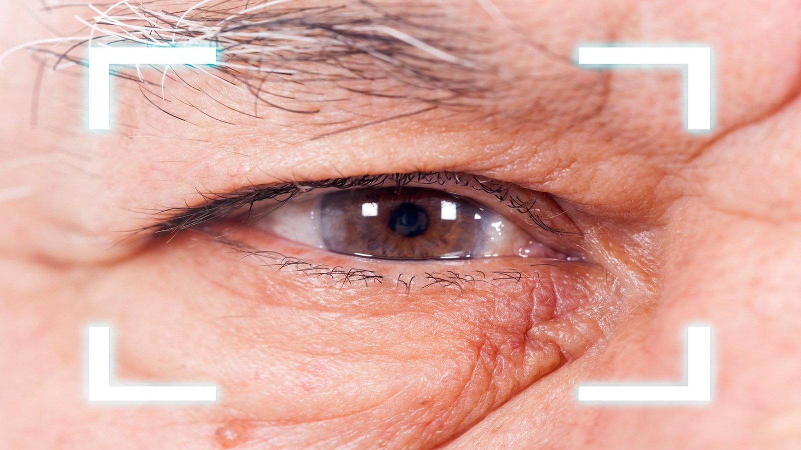

Deteksi Katarak
1
Unggah Citra Mata
2
Analisis Sistem
3
Selesai
Anda dapat menyeret dan menjatuhkan file di sini untuk menambahkannya.

Unggah Citra Mata
Analisis Sistem
Selesai
Anda dapat menyeret dan menjatuhkan file di sini untuk menambahkannya.